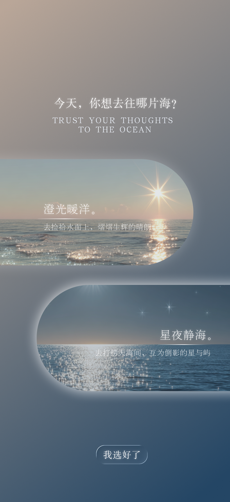
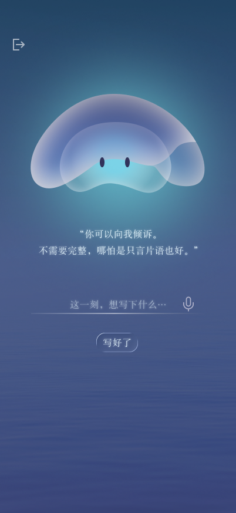
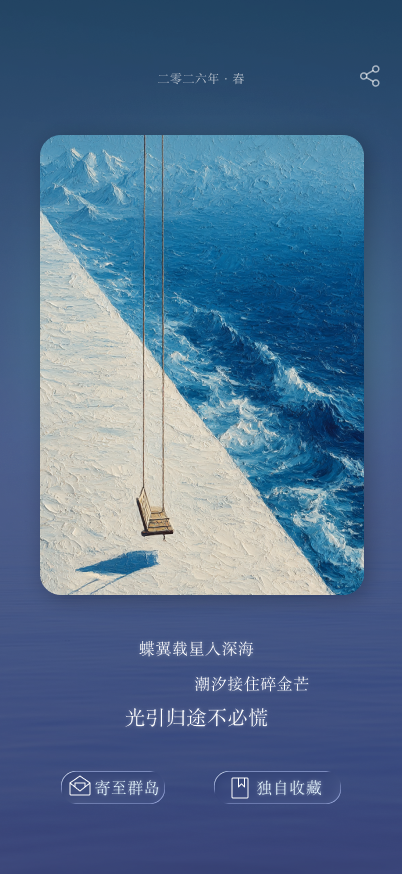
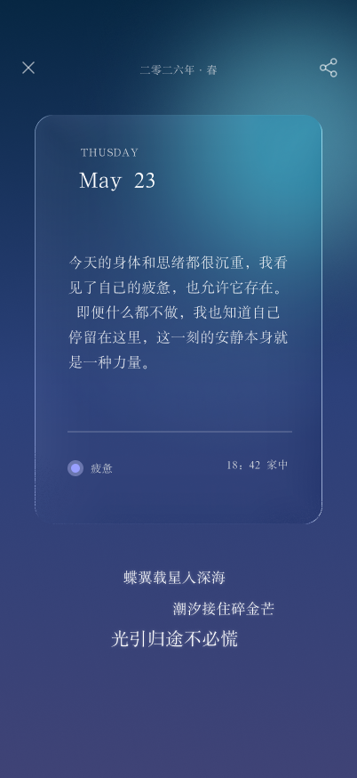
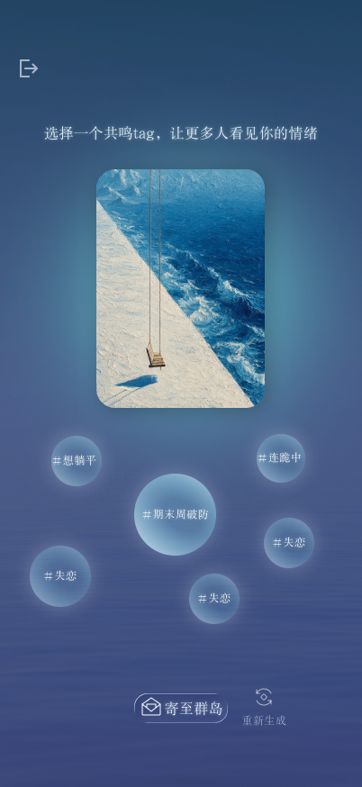
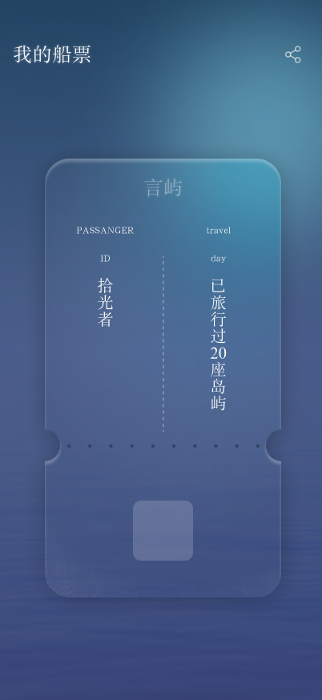
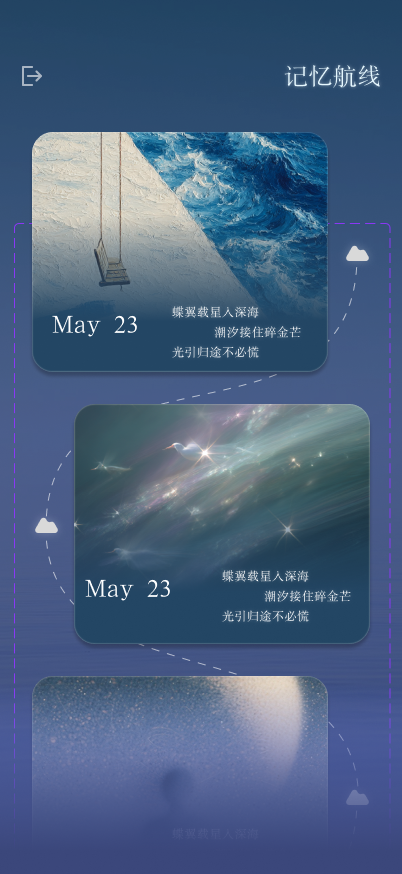
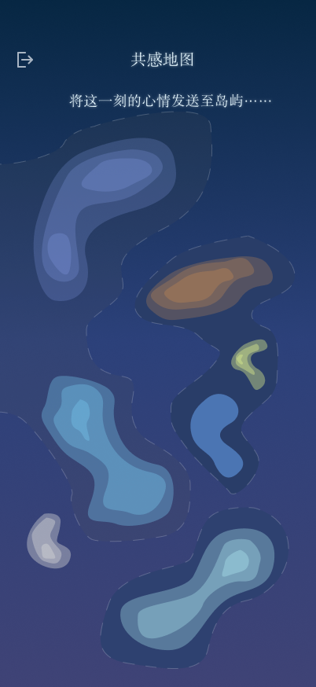
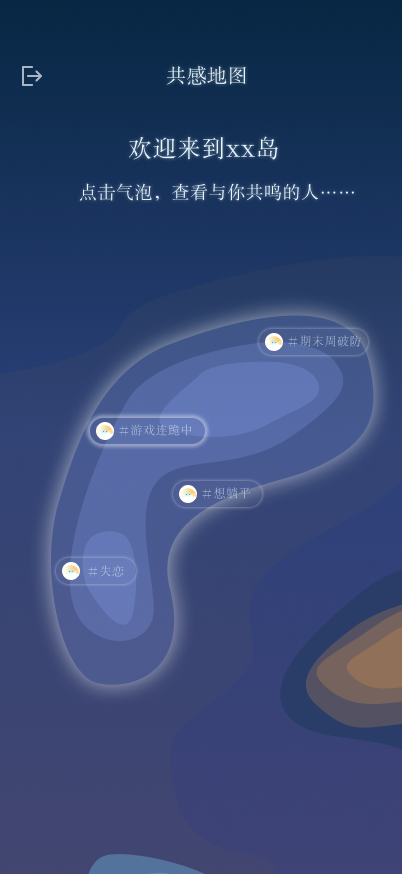

Anima Isle
A place where a few honest sentences become an image, a three-line poem, and a ticket you can keep.


How do you hold a feeling?
Many people are not unwilling to speak. They simply cannot organise what hurts into a clean sentence. We wanted to lower that threshold without turning vulnerability into another noisy social feed.
Instead of asking users to label themselves, Anima Isle listens first and translates later.


Not just one AI reply.
The experience is carried by a multi-stage system. Each part has a small, clear responsibility:
- risk detection
- emotion routing
- streamed empathetic response
- embedding and visual retrieval
- three-line poem and suggested tags
- a saved ticket that can be revisited or shared

Making the island real.
I worked on the core full-stack implementation, from the Vue interface and FastAPI backend to authentication, database design, model orchestration, vector retrieval, logging, fallbacks, deployment, and the long list of details between “it works once” and “someone can actually use it.”
The most meaningful decision was using a curated visual library with semantic retrieval rather than uncontrolled text-to-image generation. It kept the world coherent, faster, and easier to trust.


A quiet form of togetherness.
Tickets can remain private, or drift onto a shared map. Other people do not need to start a conversation or explain themselves. A small hug is enough to say: I saw this, and you are not alone.
During early testing, more than 190 people tried the core online experience, while over 300 joined offline emotion-card experiments. The numbers matter, but the more important proof was that people wanted to keep what the system made for them.

